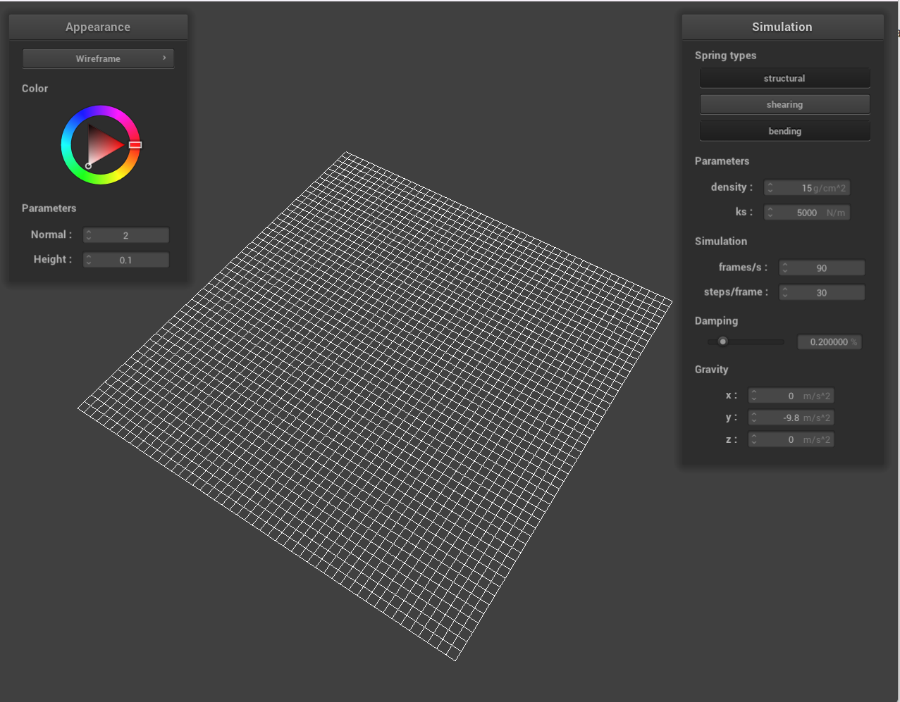
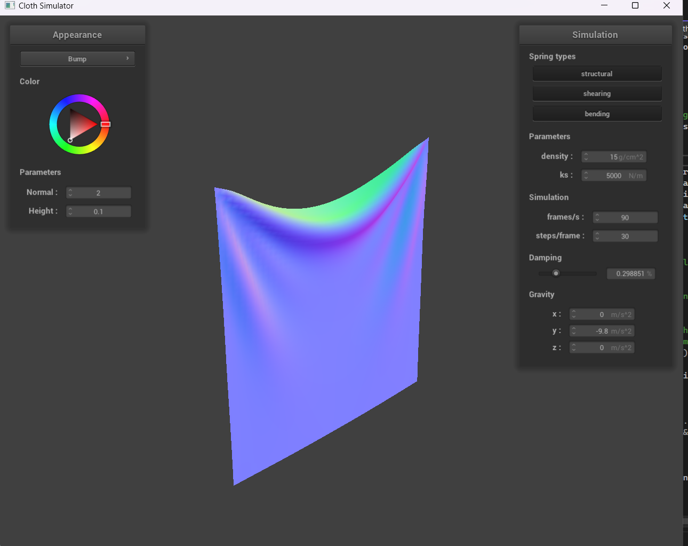
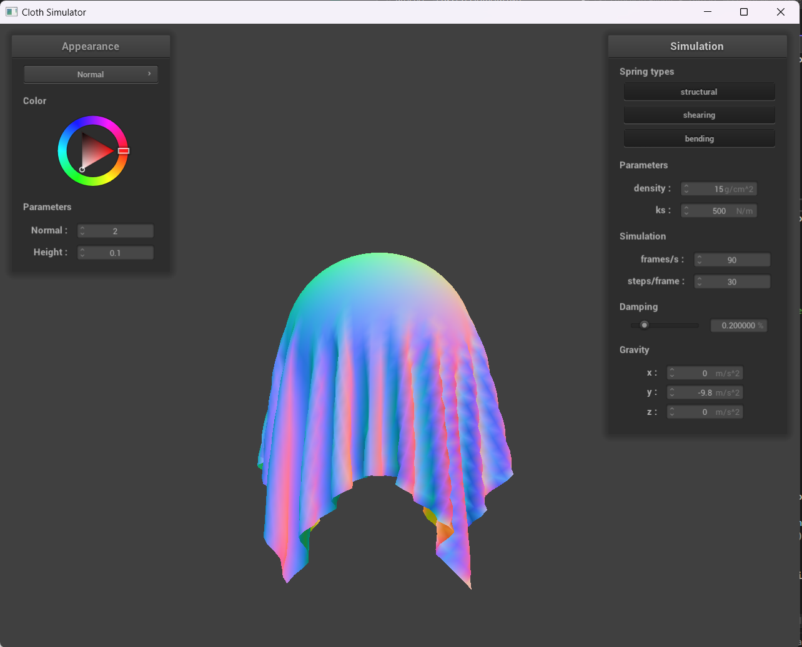
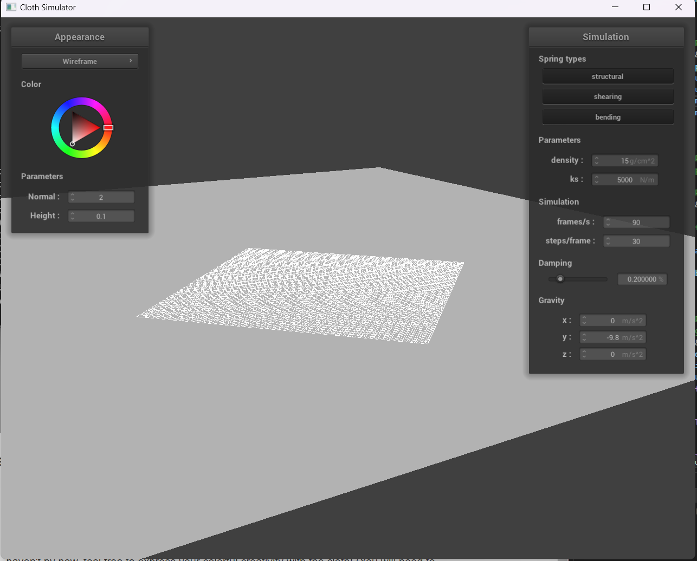
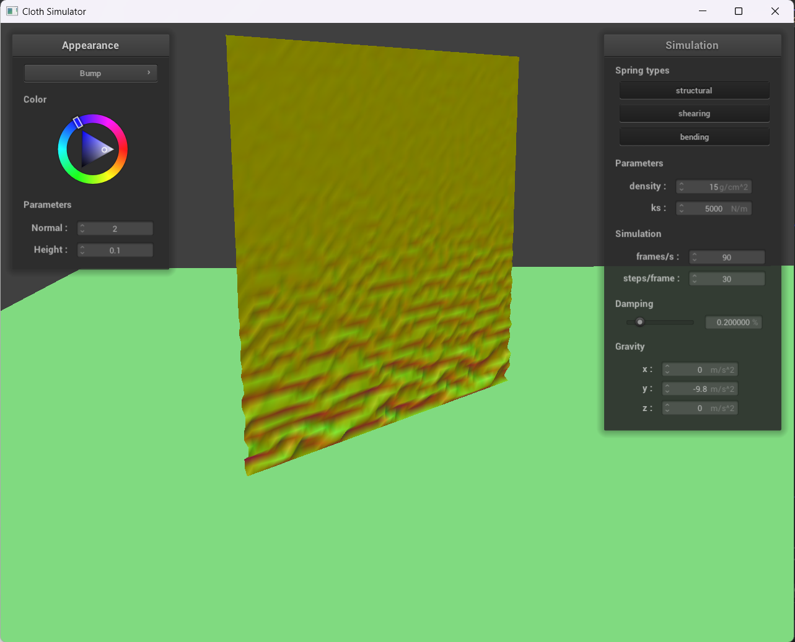
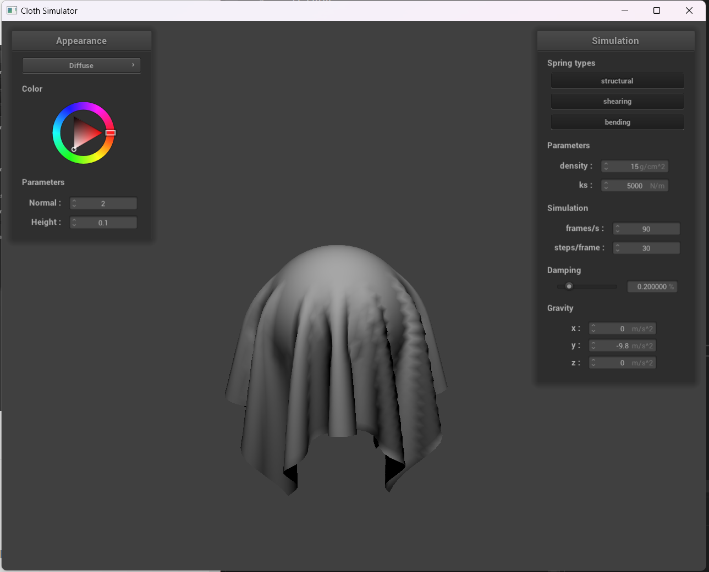
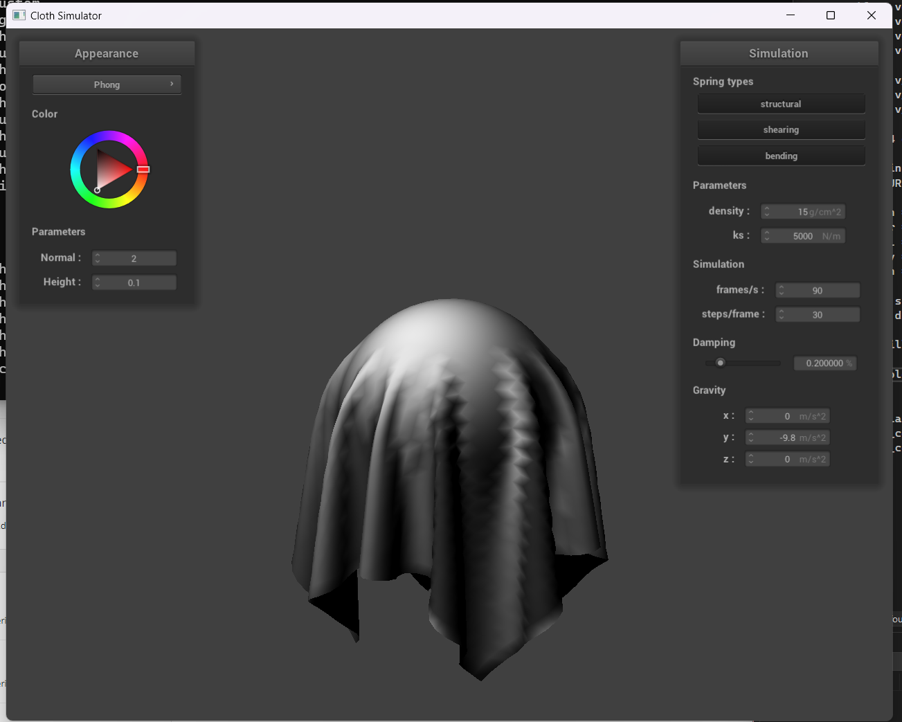
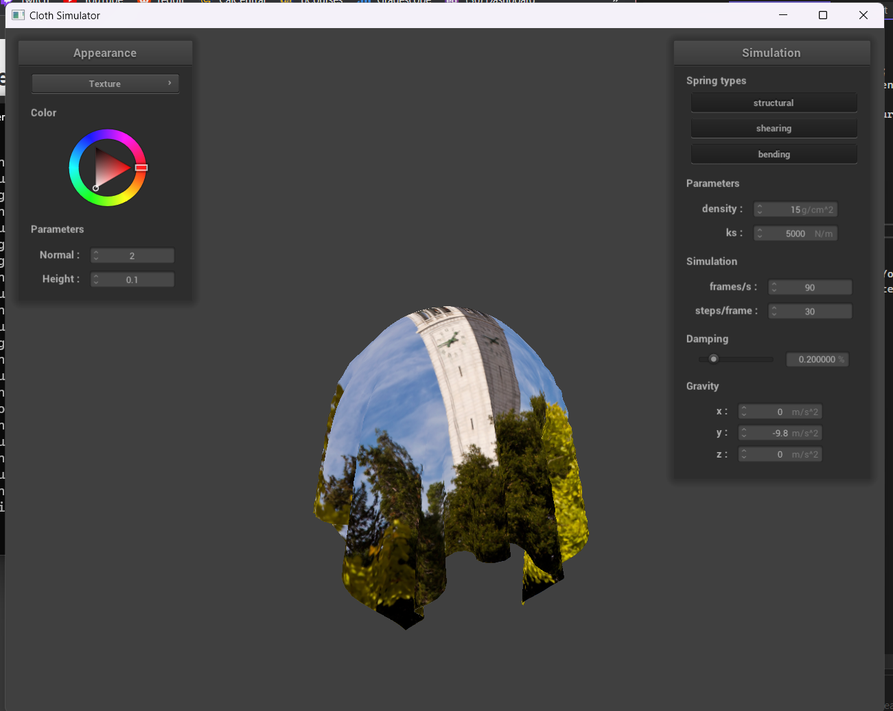

Take some screenshots of scene/pinned2.json from a viewing angle where you can clearly see the cloth wireframe to show the structure of your point masses and springs.
Without any shearing constraints.
With only shearing constraints.
With all constraints.
Experiment with some the parameters in the simulation. To do so, pause the simulation at the start with P, modify the values of interest, and then resume by pressing P again. You can also restart the simulation at any time from the cloth's starting position by pressing R.
Describe the effects of changing the spring constant ks; how does the cloth behave from start
to rest with a very low ks? A high ks?
With a lower ks, the cloth is more strechy and with a higher ks, the cloth is more stiff.
When the cloth with a lower ks comes to a rest, the middle sags more than the default cloth.
Likewise, the cloth with the higher ks sags less than the default cloth.
What about for density?
With a higher density, the cloth sags down more as there is more weight pulling it down. With a lower density,
the cloth is lighter and doesn't sag as much in the middle.
What about for damping?
With higher damping, the cloth is less "bouncy" and doesnt ripple as much as with lower damping.
Show us a screenshot of your shaded cloth from scene/pinned4.json in its final resting state! If
you choose to use different parameters than the default ones, please list them.

Show us screenshots of your shaded cloth from scene/sphere.json in its final resting state on the sphere using the default ks = 5000 as well as with ks = 500 and ks = 50000. Describe the differences in the results.
ks = 500. The cloth appears to wrap more tightly around the ball and the cloth ripples are closer together.
ks = 5000. The cloth flares out a little bit more as a result of the stronger spring constant keeping the cloth closer to its original shape.
ks = 50000. The cloth flares out the most and is the most stiff as the spring constant is the highest.
Show us a screenshot of your shaded cloth lying peacefully at rest on the plane. If you haven't by now, feel free to express your colorful creativity with the cloth! (You will need to complete the shaders portion first to show custom colors.)
Cloth resting on plane.
Show us at least 3 screenshots that document how your cloth falls and folds on itself, starting with an early, initial self-collision and ending with the cloth at a more restful state (even if it is still slightly bouncy on the ground).

Explain in your own words what is a shader program and how vertex and
fragment shaders work together to create lighting and material effects.
A shader program is a program that specifies certain stages of the rendering pipeline.
Vertex shaders specify the color values at each vertex. Fragment shaders determines the color
values in the rasterized portions between verticies. These two shading functions are used to
create lighting effects for surfaces.

Explain the Blinn-Phong shading model in your own words.
Show a screenshot of your Blinn-Phong shader outputting only the ambient component,
a screen shot only outputting the diffuse component, a screen shot only outputting
the specular component, and one using the entire Blinn-Phong model.
Blinn-Phong shading produces more accurate lighting that takes into account the location of the viewing point
as well as the lighting source. When the half-vector between these two points and a surface are small, more light
is reflected.

Show a screenshot of your texture mapping shader using your own custom texture by
modifying the textures in /textures/.
